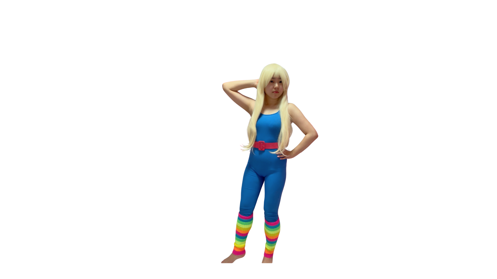
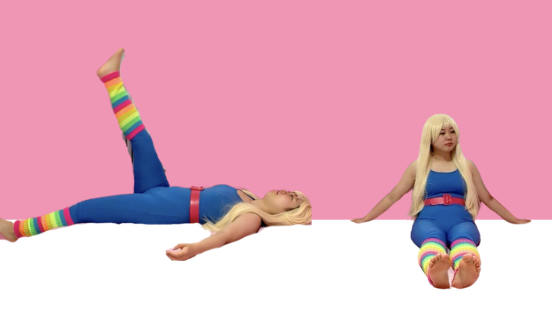
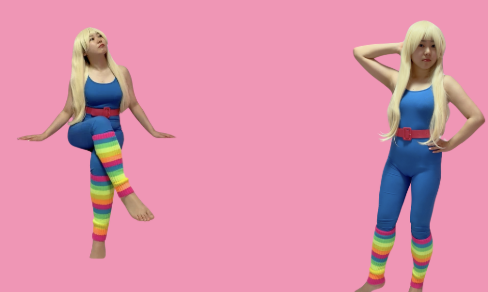

第7章：ながらOK宅トレ動画5選
〜 バービーちゃんと一緒に!! 〜
ジムに行く時間がない、運動が続かない——そんな方のために、 テレビを見ながら・スマホを見ながらできる宅トレを5つ厳選しました。
1回5〜10分、週3回からでOK。バービーちゃんと一緒に、楽しく体を動かしましょう 💪🌸
体調に合わせて無理のない範囲で。痛みがあるときは中止してください。
🏃 ながらOK宅トレ 5選

① 座りながら腿上げ
お腹・脚の引き締め
椅子や床に座って、片足ずつゆっくり上げ下げ。テレビを見ながらOK！
目安：左右10回 × 3セット／膝は曲げず、お腹に力を入れる

② ながらスクワット
お尻・太ももをトーンアップ
立ったまま、膝を曲げて少し腰を下げる。洗い物や歯磨きのときにもできます。
目安：10回 × 3セット／膝がつま先より前に出ないよう注意

③ 壁押し（腕立ての代わり）
二の腕・胸を引き締め
壁に手をついて、体を前に倒す。腕立て伏せが難しい方におすすめ。
目安：10回 × 3セット／体幹を意識してゆっくり

④ 背筋ストレッチ
姿勢改善・むくみ解消
仰向けに脚を上げたり、座って前屈するなど。体をほぐして血流を促進。
目安：各ポーズ30秒 × 2回／呼吸を止めずにゆっくり

⑤ 肩甲骨リセット
肩こり解消・姿勢アップ
肩を回す、腕を大きく動かす。デスクワークの合間にもぴったり。
目安：左右10回 × 3セット／肩をすくめず、背中を意識
📱 動画でも一緒にトレーニング
バービーちゃんのInstagramでは、ながらOKの宅トレ動画を毎日投稿しています。 一緒に動きながら、楽しく続けましょう！
動画で一緒にトレーニングしたい方は
Instagramをフォローしてください 💖
💬 運動は「完璧」より「続ける」が大事。
今日5分だけ、バービーちゃんと一緒に動いてみませんか？ 🌸